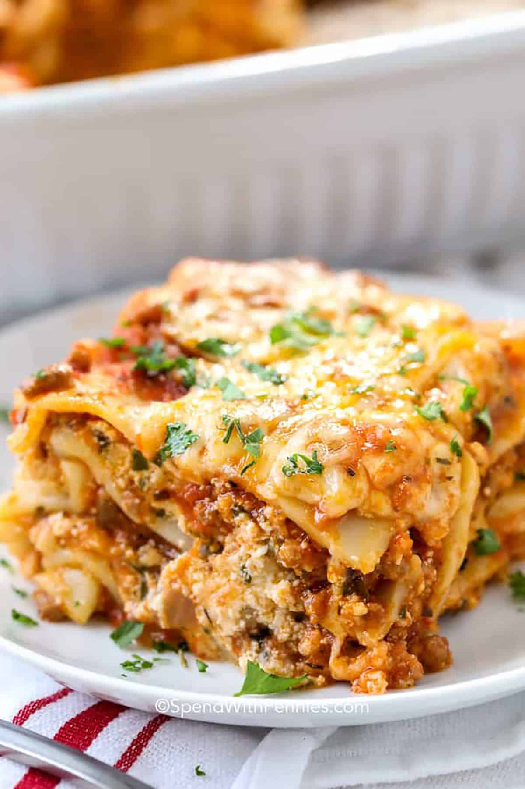

While homemade lasagna may have a few steps, each step is easy – and I assure you it’s worth the time; the perfect Italian meal!
Boil pasta: In a large pot of salted water boil lasagna noodles per the recipe below.
Prepare meat sauce: Cook sausage and beef with onion and garlic.
Drain well, add the pasta sauce (I love this brand) & simmer it for a few minutes to thicken.
Combine cheese mixture: Stir the cheese mixture together in a bowl.
Layer & bake: Layer the meat sauce and cheese mixture with lasagna noodles and bake until the top of the lasagna is golden brown.